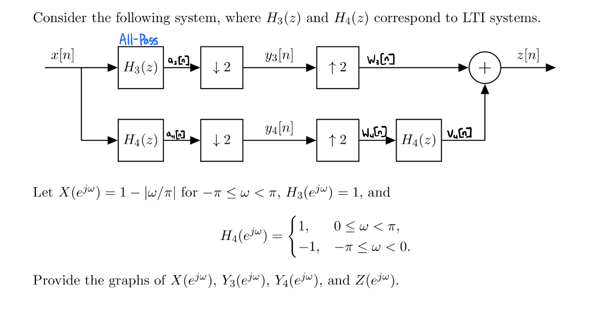

clc; clear; close all % EXAMPLE1 - Demonstrating Frequency Domain Processing using DTFTLab % % Description: % This script showcases a signal processing problem where the DTFTLab % library can be used to apply filtering, downsampling, and upsampling % in the frequency domain. The example explores how different filters % affect a signal and how aliasing occurs when downsampling without % appropriate filtering. % % Steps: % 1. Define two filters: an all-pass filter H3 and a sign-changing filter H4. % 2. Apply these filters to a given frequency-domain signal X(e^jω). % 3. Downsample and observe the aliasing effects. % 4. Upsample and reconstruct the original signal. % 5. Compare results by filtering again and summing components. % % See also: applyFilter, downsampleDTFT, upsampleDTFT, magPlot % Load and display an example image (for visualization context) img = imread('Example1.jpg'); imshow(img); % Define frequency range (-pi to pi) omega = linspace(-pi, pi, 100000); % H_3(e^jω) is an all-pass filter H3 = ones(size(omega)); figure; subplot(1, 2, 1); magPlot(H3, true, true); % H_4(e^jω) = {1: 0 <= ω < pi; -1: -pi <= ω < 0} H4 = zeros(size(omega)); H4(omega>0) = 1; H4(omega<0) = -1; subplot(1, 2, 2); magPlot(H4, true, true); % Define input signal: X(e^jω) = 1-|ω/pi| X = 1 - abs(omega/pi); figure; subplot(3,3,1); magPlot(X, false, true); % Apply filters A4 = applyFilter(X, H4, true); subplot(3,3,2); magPlot(A4, true, true); A3 = applyFilter(X, H3, true); subplot(3,3,3); magPlot(A3, true, true); % Downsampling Y3 = downsampleDTFT(A3, omega, 2, false, true); subplot(3,3,4); magPlot(Y3, true, true); Y4 = downsampleDTFT(A4, omega, 2, false, true); subplot(3,3,5); magPlot(Y4, true, true); % Upsampling W3 = upsampleDTFT(Y3, omega, 2, false, true); subplot(3,3,6); magPlot(W3, true, true); W4 = upsampleDTFT(Y4, omega, 2, false, true); subplot(3,3,7); magPlot(W4, true, true); % Filtering again V4 = applyFilter(W4, H4, true); subplot(3,3,8); magPlot(V4, true, true); % Summing components Z = V4 + W3; subplot(3,3,9); magPlot(Z, true, true);